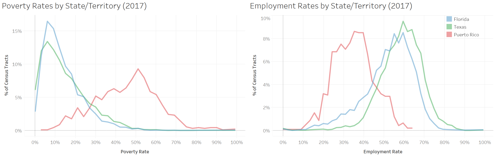

Data
A comprehensive database has been created at the U.S. Census Tract level1 for the states of Florida, Texas and Puerto Rico. Data has been obtained from the following publicly available datasets and encompasses FEMA damage reports and payments, Census demographics and hurricane geospatial files containing peak wind speeds.
- OpenFEMA’s Individual Assistance Housing Registrants – Large Disasters
- U.S. Census Bureau’s American Community Survey – 5 Year Estimates
- U.S. Department of Housing and Urban Development (HUD) Fair Market Rates
- National Oceanic and Atmospheric Administration Hurricane Track Data
- Applied Research Associates, Inc. (ARA) Hurricane Wind Speed Data
1. A U.S. Census Tract is a lower-level geographic area which typically spans 1,200 to 8,000 people and as such better reflects the demographic characteristics of smaller communities within a county or municipality.
FEMA makes its data publicly available as it seeks to promote “government transparency and accountability, as well as enabling collaboration with community partners... to improve outcomes in support of disaster survivors.”
The Large Disasters dataset includes anonymized records of applications for FEMA’s Individual Assistance program during the 2017 hurricane season. The data was derived from the National Emergency Information System (NEMIS), which has been used to process all cases for FEMA’s Individual Assistance programs since 1998. It contains data on the damages sustained, claimant eligibility status and amount of financial aid provided by FEMA to help pay for temporary housing and housing repairs. It also includes other fields which are pertinent in FEMA’s determination of claimant eligibility and amount of aid required such as insurance status and FEMA estimated valuation of property damages upon inspection of the property.
FEMA’s Individuals and Household Unified Guidance sets forth the standardized guidelines which define the administration of the program. Residents of impacted communities are entitled to submit housing assistance claims pertaining to:
- Housing repairs
- Home replacements
- Rental assistance
These three payments types make up the Housing Assistance program and are collectively referred to as the Housing Assistance (HA) Amount. This is the target variable of interest in this study and as such will serve as the basis for the comparison of financial aid allocations across the U.S. states and territories.
The following visualizations give a sense of the magnitude of FEMA’s Housing Assistance program, by displaying payments made to Florida, Texas, and Puerto Rico communities, during 2017.
A detailed database consisting of more than 300 demographic attributes was collated from the U.S. Census Bureau’s 2017 American Community Survey, using 5-year estimates. This database enables a rich demographic profile to be developed for U.S. Census Tracts and at a high-level spans:
- Socioeconomic factors – poverty, income, unemployment and educational attainment
- Housing characteristics – homeownership rates, residence type and structural aspects such as year built
The demographic database will make it possible to analyze whether any relationship exists between socioeconomic status and the amount of FEMA aid received. It is also a key component of the post-analysis which will investigate whether socioeconomic status is a predictor of the damages sustained during a hurricane.

Fair Market Rates (FMRs) are gross rent estimates established by the U.S. Department of Housing and Urban Development. FMRs include the shelter rent plus the cost of utilities and reflects the 40th percentile for gross rents for regular rental units occupied by recent movers in a local housing market, i.e. within a given county. FMRs are a key component of FEMA’s payment calculation when setting the rental assistance rates for communities in the wake of a disaster.
The National Hurricane Center (NHC) is the division of the United States' NOAA/National Weather Service responsible for tracking and predicting tropical weather systems. The agency maintains archives and statistics on Atlantic and Pacific hurricane history, including hurricane forecast tracks, uncertainty cones, and warnings. The datasets are available as GIS shapefiles, a standard format for encoding geospatial information. Incorporating the path of the hurricane in our analysis was an important step in being able to visualize areas of most impact from the storm.

ARA is a research and engineering company headquartered in Albuquerque, New Mexico, that has developed a hurricane catastrophe model to derive wind speeds and directions of a translating storm. Hurricane wind speeds can be used to estimate potential property damage using the Saffir-Simpson Hurricane Wind Scale (see table). This dataset is used in our post-analysis where peak wind gusts for each census tract are included to control for storm-specific factors across the island.
| Category | Sustained Winds | Type of Damage |
|---|---|---|
| 1 | 74-95 mph | Very dangerous, some damage |
| 2 | 96-110 mph | Extremely dangerous, extensive damage |
| 3 (major) | 111-129 mph | Devastating damage will occur |
| 4 (major) | 130-156 mph | Catastrophic damage will occur |
| 5 (major) | >157 mph | Catastrophic damage will occur |